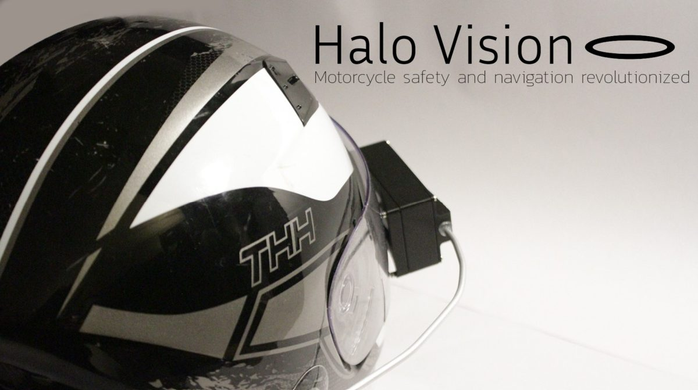

Project lead, December 2023 to August 2024. github · project report (pdf, 24 MB) · CFD report (pdf)

An open-source heads-up display for motorcycle helmets. Turn-by-turn navigation and safety notifications in your eyeline, with custom PCBs, firmware, and a mobile app. The PCBs replaced the dev-board prototype and were designed around power. The helmet mounts and enclosures went through CFD and wind tunnel testing to see what the forces on them look like at riding speed. Hardware, firmware, and app files are all on GitHub :) Built with app developers, hardware engineers, and a few industry contacts.